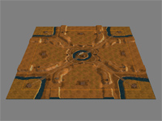
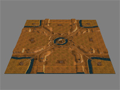

 Download this map for Generals Zero Hour
This is the third modification of the original Red Cross map.
The base layout is almost identical to the original Red Cross. Ambient light changed to original Red Cross setting. Corner islands have been enlarged.
Large supply docks have been added in each corner replacing oil derricks. Each base have one oil derrick and one reinforcement pad on nearby ridges. In front of each starting position there is now a gun tower.
Bridges have been shortened to reduce the risk of a computer cornering himself.
Optimized for Advanced AI Mod for C&C Generals: Zero Hour v0.98